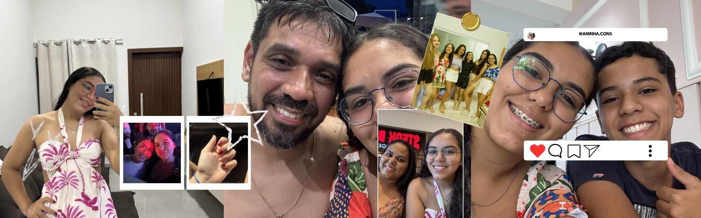

.jpg)
ANA BEATRIZ CONSTANTINO DA SILVA
Tenho 16 anos, sou estudante de Umuarama e trabalho na Ultra Popular. Sou uma pessoa determinada, que busca aprender rápido e não deixa o pouco tempo te limitar. Estou sempre tentando evoluir e melhorar, tanto nos estudos quanto nas minhas ideias. Tenho uma mentalidade focada, foco, disciplina e vontade de crescer cada vez mais.
MINHA MENTALIDADE
EMPATIA
Entender os outros é fundamental para construir relações sólidas.
PERSISTENTE
Não desisto dos meus objetivos, mesmo diante de desafios.
DISCIPLINADA
Mantenho o foco e a organização para dar conta de tudo.
ESFORÇADA
Dou o meu máximo em tudo o que me proponho a fazer.
FATOS & CURIOSIDADES
RELIGIÃO / FÉ
Tenho fé em Deus e acredito que tudo acontece no tempo certo.
UM HOBBY
Gosto de estudar e aprender coisas novas com um objetivo.
UMA HABILIDADE
Aprender a lidar com pressão sem desistir dos meus objetivos.
CURIOSIDADE
Mesmo com pouco tempo, consigo me organizar muito bem.
MEUS HOBBIES
🎬 FILMES
- 10 Coisas que eu Odeio em Você
- Se não fosse Você
- Crepúsculo (A Saga Toda)
- Como se fosse a Primeira Vez
📺 SÉRIES
- The Vampire Diaries
- Teen Wolf
- Stranger Things
- The Good Doctor
🌟 ESSENCIAIS
Clima: Frio
Comida: Lasanha da Minha Mãe
Cores: Azul, Preto, Vermelho, Cinza
Artistas: Luan Santana, Henrique & Juliano...